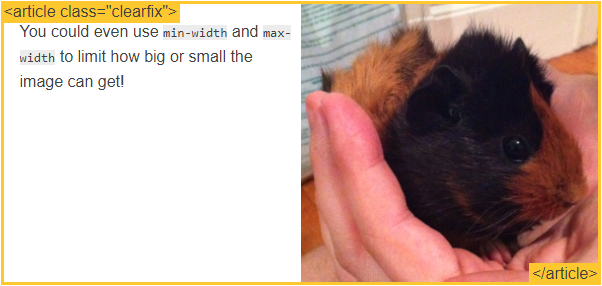

Introduction
This site teaches the CSS fundamentals that are used in any website's layout.
I assume you already know what selectors, properties, and values are. And you probably know a thing or two about layout, though it may still be a rage-provoking activity for you. If you want to learn HTML and CSS from the beginning, you should check out this tutorial. Otherwise, let's see if we can save you some fury on your next project.
No layout
Having no layout whatsover is almost ok if all you want is one big column of content. However, if a user makes the browser window really wide, it gets kind of annoying to read: after each line your eyes have a long distance to travel right-to-left to the next line. Try resizing your browser to see what I mean!
The "display" property
display is CSS's most important property for controlling layout. Every element has a default display value depending on what type of element it is. The default for most elements is usually block or inline. A block element is often called a block-level element. An inline element is always just called an inline element.
block
div is the standard block-level element. A block-level element starts on a new line and stretches out to the left and right as far as it can. Other common block-level elements are p and form, and new in HTML5 are header, footer, section, and more.
inline
span is the standard inline element. An inline element can wrap some text inside a paragraph like this without disrupting the flow of that paragraph. The a element is the most common inline element, since you use them for links.
none
Another common display value is none. Some specialized elements such as script use this as their default. It is commonly used with JavaScript to hide and show elements without really deleting and recreating them.
This is different from visibility. Setting display to none will render the page as though the element does not exist. visibility: hidden; will hide the element, but the element will still take up the space it would if it was fully visible.
other display values
There are plenty of more exotic display values, such as list-item and table. Here is an exhaustive list. We'll discuss inline-block and flex later on.
extra credit
As I mentioned, every element has a default display type. However, you can always override this! Though it wouldn't make sense to make an inline div, you can use this to customize the display of elements that have particular semantics. A common example is making inline li elements for horizontal menus.
margin: auto;
#main {
width: 600px;
margin: 0 auto;
}
Setting the width of a block-level element will prevent it from stretching out to the edges of its container to the left and right. Then, you can set the left and right margins to auto to horizontally center that element within its container. The element will take up the width you specify, then the remaining space will be split evenly between the two margins.
The only problem occurs when the browser window is narrower than the width of your element. The browser resolves this by creating a horizontal scrollbar on the page. Let's improve the situation...
max-width
#main {
max-width: 600px;
margin: 0 auto;
}
Using max-width instead of width in this situation will improve the browser's handling of small windows. This is important when making a site usable on mobile. Resize this page to check it out!
By the way, max-width is supported by all major browsers including IE7+ so you shouldn't be afraid of using it.
the box model
While we're talking about width, we should talk about width's big caveat: the box model. When you set the width of an element, the element can actually appear bigger than what you set: the element's border and padding will stretch out the element beyond the specified width. Look at the following example, where two elements with the same width value end up different sizes in the result.
.simple {
width: 500px;
margin: 20px auto;
}
.fancy {
width: 500px;
margin: 20px auto;
padding: 50px;
border-width: 10px;
}
For generations, the solution to this problem has been extra math. CSS authors have always just written a smaller width value than what they wanted, subtracting out the padding and border. Thankfully, you don't have to do that anymore...
box-sizing
The original box model behavior was eventually considered unintuitive, so a new CSS property called box-sizing was created. When you set box-sizing: border-box; on an element, the padding and border of that element no longer increase its width. Here is the same example as the previous page, but with box-sizing: border-box; on both elements:
.simple {
width: 500px;
margin: 20px auto;
-webkit-box-sizing: border-box;
-moz-box-sizing: border-box;
box-sizing: border-box;
}
.fancy {
width: 500px;
margin: 20px auto;
padding: 50px;
border: solid blue 10px;
-webkit-box-sizing: border-box;
-moz-box-sizing: border-box;
box-sizing: border-box;
}
Since this is so much better, some authors want all elements on all their pages to always work this way. Such authors put the following CSS on their pages:
* {
-webkit-box-sizing: border-box;
-moz-box-sizing: border-box;
box-sizing: border-box;
}
This ensures that all elements are always sized in this more intuitive way.
Since box-sizing is pretty new, you should use the -webkit- and -moz- prefixes for now, as I have in these examples. This technique enables experimental features in specific browsers. Also, keep in mind that this one is IE8+.
position
In order to make more complex layouts, we need to discuss the position property. It has a bunch of possible values, and their names make no sense and are impossible to remember. Let's go through them one by one, but maybe you should bookmark this page too.
static
.static {
position: static;
}
static is the default value. An element with position: static; is not positioned in any special way. A static element is said to be not positioned and an element with its position set to anything else is said to be positioned.
relative
.relative1 {
position: relative;
}
.relative2 {
position: relative;
top: -20px;
left: 20px;
background-color: white;
width: 500px;
}
relative behaves the same as static unless you add some extra properties.
Setting the top, right, bottom, and left properties of a relatively-positioned element will cause it to be adjusted away from its normal position. Other content will not be adjusted to fit into any gap left by the element.
fixed
A fixed element is positioned relative to the viewport, which means it always stays in the same place even if the page is scrolled. As with relative, the top, right, bottom, and left properties are used.
I'm sure you've noticed that fixed element in the lower-right hand corner of the page. I'm giving you permission to pay attention to it now. Here is the CSS that puts it there:
.fixed {
position: fixed;
bottom: 0;
right: 0;
width: 200px;
background-color: white;
}
A fixed element does not leave a gap in the page where it would normally have been located.
Mobile browsers have surprisingly shaky support for fixed. Learn more about the situation here.
absolute
absolute is the trickiest position value. absolute behaves like fixed except relative to the nearest positioned ancestor instead of relative to the viewport. If an absolutely-positioned element has no positioned ancestors, it uses the document body, and still moves along with page scrolling. Remember, a "positioned" element is one whose position is anything except static.
Here is a simple example:
.relative {
position: relative;
width: 600px;
height: 400px;
}
.absolute {
position: absolute;
top: 120px;
right: 0;
width: 300px;
height: 200px;
}
This stuff is tricky, but it's essential to creating great CSS layouts. On the next page we'll use position in a more practical example.
float
Another CSS property used for layout is float. Float is intended for wrapping text around images, like this:
img {
float: right;
margin: 0 0 1em 1em;
}
percent width
Percent is a measurement unit relative to the containing block. It's great for images: here we make an image that is always 50% the width of its container. Try shrinking down the page to see what happens!
article img {
float: right;
width: 50%;
}

media queries
"Responsive Design" is the strategy of making a site that "responds" to the browser and device that it is being shown on... by looking awesome no matter what.
Media queries are the most powerful tool for doing this. Let's take our layout that uses percent widths and have it display in one column when the browser is too small to fit the menu in the sidebar:
@media screen and (min-width:600px) {
nav {
float: left;
width: 25%;
}
section {
margin-left: 25%;
}
}
@media screen and (max-width:599px) {
nav li {
display: inline;
}
}
inline-block
You can create a grid of boxes that fills the browser width and wraps nicely. This has been possible for a long time using float, but now with inline-block it's even easier. inline-block elements are like inline elements but they can have a width and height. Let's look at examples of both approaches.
The Hard Way (using float)
.box {
float: left;
width: 200px;
height: 100px;
margin: 1em;
}
.after-box {
clear: left;
}
The Easy Way (using inline-block)
You can achieve the same effect using the inline-block value of the display property.
.box2 {
display: inline-block;
width: 200px;
height: 100px;
margin: 1em;
}
You have to do extra work for IE6 and IE7 support of inline-block. Sometimes people talk about inline-block triggering something called hasLayout, though you only need to know about that to support old browsers. Follow the previous link about IE6 and IE7 support if you're curious to learn more.
inline-block layout
You can also use inline-block for layouts. There are a few things to keep in mind:
- inline-block elements are affected by the vertical-align property, which you probably want set to top.
- You need to set the width of each column
- There will be a gap between the columns if there is any whitespace between them in the HTML
nav {
display: inline-block;
vertical-align: top;
width: 25%;
}
.column {
display: inline-block;
vertical-align: top;
width: 75%;
}
column
There is a new set of CSS properties that let you easily make multi-column text. Have a look:
.three-column {
padding: 1em;
-moz-column-count: 3;
-moz-column-gap: 1em;
-webkit-column-count: 3;
-webkit-column-gap: 1em;
column-count: 3;
column-gap: 1em;
}
CSS columns are very new, so you need to use the prefixes, and it won't work through IE9 or in Opera Mini. There are some more column-related properties, so click here to read more. Otherwise, off to the next topic.
flexbox
The new flexbox layout mode is poised to redefine how we do layouts in CSS. Unfortunately the specification has changed a lot recently, so it's implemented differently in different browsers. Still, I'd like to share a couple examples so you know what's coming up. These examples currently only work some browsers that use the latest version of the standard.
There are a lot of out-of-date flexbox resources around. If you want to learn more about flexbox, start here to learn how to identify if a resource is current or not. I have written a detailed article using the latest syntax.
There is a lot more you can do with flexbox; these are just a few examples to give you an idea:
Simple Layout using Flexbox
.container {
display: -webkit-flex;
display: flex;
}
nav {
width: 200px;
}
.flex-column {
-webkit-flex: 1;
flex: 1;
}